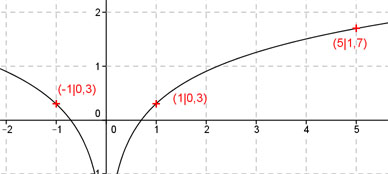

Aufgabe 87 Ergänzen Sie die Wertetabelle für den Graphen: y = lg 2x2 x 1 oder -1 5 y 0,3 1,7 f(5) = lg (2 * 52) = lg 50 = 1,7 gerundet f(x) = 0,3 eingesetzt : 0,3 = lg 2x2 --> 2x2 = 100,3 = 2 2x2 = 2| :2 x2 = 1 |√ x1 = 1 x2 = -1 